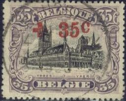
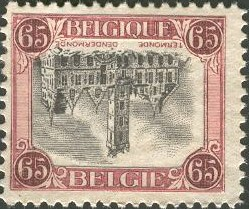
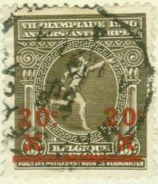
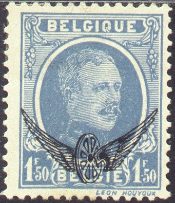
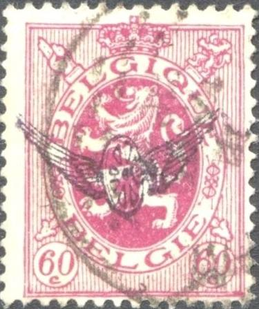
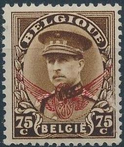
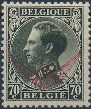
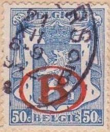
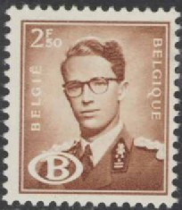

Return To Catalogue - Belgium 1849-1865, King Leopold - Belgium 1866-1869 Lions - Belgium 1869-1892 - Belgium 1893-1911 - Belgium 1912 Arms and King Albert issue
Currency: 100 Centimes = 1 Franc
Note: on my website many of the
pictures can not be seen! They are of course present in the
catalogue;
contact me if you want to purchase it.
For stamps of Belgium 1914-15 Red Cross issues or Belgium 1912 click here.
1 c orange 2 c brown 3 c grey (1920) 5 c green 10 c red 15 c violet 20 c lilac 25 c blue Overprinted with red cross and surcharged on stamps with a slightly different shade in color
1 c + 1 c dark-orange 2 c + 2 c light-brown 5 c + 5 c green 10 c + 10 c red 15 c + 15 c violet 20 c + 20 c brown-lilac 25 c + 25 c dark-blue
Value of the stamps |
|||
vc = very common c = common * = not so common ** = uncommon |
*** = very uncommon R = rare RR = very rare RRR = extremely rare |
||
| Value | Unused | Used | Remarks |
| 1 c | vc | vc | |
| 2 c | vc | vc | |
| 5 c | c | vc | |
| 10 c | c | vc | |
| 15 c | * | vc | |
| 20 c | * | vc | |
| 25 c | * | c | |
| Red Cross | |||
| 1 c + 1 c | * | * | |
| 2 c + 2 c | * | * | |
| 5 c + 5 c | * | * | |
| 10 c + 10 c | ** | ** | |
| 15 c + 15 c | *** | *** | |
| 20 c + 20 c | *** | *** | |
| 25 c + 25 c | *** | *** | |
The ordinary postage stamps of 1915 in the values 5 c, 10 c and 20 c, were allowed to be overprinted with a large "T" to serve as postage due stamps. This was done from December 1919 onwards(?).
Examples of large "T" overprints.


Most likely forgeries of the red-cross issue. The distance
between the value and "c" is too large.

25 c blue (1919, Perron Liegois, Liege Luik) 35 c brown and black (Ypres Yper) 40 c green and black (Dinant) 50 c red and black (Louvain Leuven) 65 c red and black (Termonde Dendermonde, 1920) 1 F violet (Antwerp harbour) 2 F grey 5 F blue (Furnes Veurne, value in 'Frank') (1919) 5 F blue (value in 'Franken') 10 F brown (three kings) Surcharged '55 c' and bars on 65 c red and black (1921) Overprinted with red cross and value (colours changed)

(Reduced sizes)
35 c + 35 c violet and balck 40 c + 40 c red and black 50 c + 50 c blue and black 1 F + 1 F grey 2 F + 2 F green 5 F + 5 F brown 10 F + 10 F blue
One of the great rarities of this country is the 65 c with inverted center ('Kopstaande Dendermonde').
Genuine inverted 65 c stamp, image obtained from a Shreves
auction
Value of the stamps |
|||
vc = very common c = common * = not so common ** = uncommon |
*** = very uncommon R = rare RR = very rare RRR = extremely rare |
||
| Value | Unused | Used | Remarks |
| 25 c | * | c | |
| 35 c | * | c | |
| 40 c | * | c | |
| 50 c | * | c | |
| 65 c | * | c | inverted center: RRR |
| 1 F | R | * | |
| 2 F | *** | * | |
| 5 F | RR | RR | "Franken" |
| 5 F | *** | * | "Frank" |
| 10 F | R | *** | |
| Surcharged | |||
| 55 on 65 c | * | c | These stamps were printed side by side with
unoverprinted stamps, and sold in pairs to make up for the 1.20 Franc rate for express letters. |
| Red Cross | |||
| 35 c + 35 c | *** | *** | |
| 40 c + 40 c | *** | *** | |
| 50 c + 50 c | R | R | |
| 1 F + 1 F | RR | RR | |
| 2 F + 2 F | RR | RR | |
| 5 F + 5 F | RR | RR | |
| 10 F + 10 F | RRR | RRR | |


Front and backside of an imperforate reprint of the 40 c value
made by Waterlow & Sons.
The inverted 65 c has been forged, example:

1 c brown (small size, 1920) 2 c olive (small size, 1920) 5 c green 10 c red 15 c lilac 20 c brown 25 c blue 35 c brown 40 c red 50 c brown 1 F yellow 2 F lilac 5 F red (large size) 10 F lilac (large size)
For the specialist: these stamps are perforated 11 1/2.
Value of the stamps |
|||
vc = very common c = common * = not so common ** = uncommon |
*** = very uncommon R = rare RR = very rare RRR = extremely rare |
||
| Value | Unused | Used | Remarks |
| 1 c | vc | vc | |
| 2 c | vc | vc | |
| 5 c | * | * | |
| 10 c | c | c | |
| 15 c | c | c | |
| 20 c | * | * | |
| 25 c | * | * | |
| 35 c | ** | ** | |
| 40 c | ** | ** | |
| 50 c | *** | *** | |
| 1 F | R | R | |
| 2 F | RRR | RR | |
| 5 F | RR | RR | |
| 10 F | RR | RR | |
5 c green 10 c red 15 c brown Surcharged

20 c (red) on 5 c green 20 c on 10 c red 20 c (red) on 15 c brown
For the specialist: these stamps are perforated 12.
Value of the stamps |
|||
vc = very common c = common * = not so common ** = uncommon |
*** = very uncommon R = rare RR = very rare RRR = extremely rare |
||
| Value | Unused | Used | Remarks |
| 5 c | * | * | |
| 10 c | * | * | |
| 15 c | * | * | |
| Surcharged | |||
| 20 c on 5 c | c | c | |
| 20 c on 10 c | c | c | |
| 20 c on 15 c | c | c | |
20 + 20 c brown
1 c orange 2 c olive (1926) 3 c red 5 c grey 10 c green 15 c violet 20 c brown 25 c lilac 25 c violet 30 c red (another shade was issued in 1926) 35 c brown 35 c green (1929) 40 c red 50 c brown 60 c brown (1928) 75 c violet 1 F yellow 1 F red (1928) 1.25 F blue 1.50 F blue 1.75 F blue (1927) 2 F blue 5 F green 10 F brown Surcharged (1927) 3 c (red) on 2 c olive 10 c (red) on 15 c violet 35 c (blue) on 40 c red '=1F75=' (red) on 1.50 F blue Overprinted 'Inondations 30 c Watersnood' in red
30 c + 30 c blue
The values 30 c, 75 c and 1.75 F were overprinted with a precancel "BRUXELLES 1929 BRUSSEL = 5 c =" in 1929.
Some additional values exist (4 F yellow and 5 F light brown) with overprint "COLIS POSTAL POSTCOLLO" (1928):


Stamps overprinted with a winged wheel are Railway Official Stamps.
50 c blue 75 c red 75 c blue 1 F brown 1 F blue (1926) 2 F green 5 F brown 5 F brown on red (issued for a philatelic exhibition in Brussels) 10 F red Larger size (1929) 10 F brown 20 F green 50 F lilac 100 F red
20 + 20 c grey
10 c green 15 c violet 20 c brown 25 c black 30 c orange 35 c blue 40 c brown 50 c light brown 75 c blue 1 F lilac 2 F blue 5 F black 10 F red
These stamps were only made available in whole sets.
15 c + 5 c violet and red 30 c + 5 c grey 1 F + 10 c blue and red
Lion and cross 5 c + 5 c brown 20 c + 5 c brown 50 c + 5 c violet King and Queen 1.50 F + 25 c blue 5 F + 1 F red
25 c + 10 c brown 35 c + 10 c green 60 c + 10 c violet 1.75 F + 25 c blue 5 F + 1 F red
5 c + 5 c red ("ORVAL" overprinted in gold color)
25 c + 5 c violet ("ORVAL" overprinted in gold color)
35 c + 10 c green
60 c + 15 c brown
1.75 F + 25 c blue (design as 60 c)
2 F + 40 c lilac (design as 35 c)
3 F + 1 F red (design as 60 c)
5 F + 5 F red
10 F + 10 F brown (design as 5 F)


Stamps overprinted with a large fancy 'L', '18-8-29' and crown in blue or red are a speculative issue.
5 c + 5 c red (Mons) 25 c + 15 c brown (Tournai) Large sizes 35 c + 10 c green (Mechelen) 60 c + 15 c brown (Gent) 1.75 F + 25 c violet (Brussels) 5 F + 5 F lilac (Leuven)

1 c orange 2 c green 3 c brown 5 c grey 10 c olive 20 c lilac 25 c red 35 c green 40 c lilac 50 c blue 60 c lilac 70 c brown 75 c violet 75 c brown Surcharged '=2c=' (blue) on 3 c brown (1931)
I've seen tete-beche pairs of these stamps.
The value 60 c lilac was overprinted with a precancel "BELGIQUE 1931 BELGIE = 10 c =" in 1931. The values 40 c and 70 c were overprinted with a precancel "BELGIQUE 1932 BELGIE = 10 c =" in 1932 and with "BELGIQUE 1933 BELGIE = 10 c =" in 1933. The value 40 c was overprinted with the precancel "BELGIQUE 1934 BELGIE = 10 c =" in 1934. Again in 1937 the 40 c was overprinted with a precancel "BELGIQUE 1937 BELGIE = 10 c =".
Some values exist with advertisement labels: "Chevron", "Indrathen", "CONTRE TOUTES DOULEURS CACHETS DU D'FAIVRE", etc.

Stamps overprinted with a winged wheel are Belgium Railway official stamps.
5 c + 5 c brown 25 c + 15 c black 35 c + 10 c green 60 c + 15 c red 1.75 F + 25 c blue 5 F + 5 F lilac
60 c violet 1 F red 1.75 F blue Overprinted "B.I.T. 1930" 60 c violet (blue overprint) 1 F red (blue overprint) 1.75 F blue (red overprint)
The overprinted stamps have the names of the designers of the stamps at the bottom left and right (the original stamps don't have this). Any overprint without those names is a forgery.
35 c green
35 c green
4 F (+ 6 F) green
Issued in a minisheet.
10 c + 5 c lilac 25 c + 15 c brown 40 c + 10 c brown 70 c + 15 c black 1 F + 25 c red 1.75 F + 25 c blue 5 F + 5 F green (larger size)
75 c brown (1932) 75 c black (with black border, 1933) Larger size 1 F red 1.25 F black 1.50 F violet 1.75 F blue 2 F brown 2.45 F violet 2.50 F brown (1932) 5 F green 10 F lilac

Belgium Railway official stamps
The values 75 c brown exists overprinted with a red winged wheel (railway stamp; see: Belgium Railway official stamps).
The 75 c brown value exists with advertisement labels: "Chevron", "Impercuir" and "Cachets d'Faivre".
I've seen tete-beche stamps of the 75 c brown value.
2.45 F + 55 c (+ 2 F) brown (rare)
This stamp was issued in a minisheet containing just one stamp.
10 c + 5 c brown 25 c + 15 c violet 50 c + 10 c green 75 c + 15 c brown 1 F + 25 c red 1.75 F + 254 c blue 6 F + 5 F lilac

(Stamp of 1931)
2 c green (sitting woman) 5 c red (Mercury) 10 c olive (sitting woman, I've seen tete-beche stamps) 20 c lilac (Mercury) 25 c red (sitting woman, I've seen tete-beche stamps) 35 c green (Mercury)

Belgium Railway official stamps
The values 10 c and 35 c exist overprinted with a red winged wheel (railway official stamps; see Belgium Railway official stamps).
I've seen tete-beche stamps of the values: 10 c and 25 c.
I've seen the 10 c with advertisement labels attached to it: 'Ostende Dover', 'Chevron', 'Impercuir' and 'Cachets d'Faivre'.

Portrait of Cardinal Mercier 10 c + 10 c violet 50 c + 30 c lilac 75 c + 25 c brown 1 F + 2 F red Various images of Cardinal Mercier 1.75 F + 75 c blue 2.50 F + 2.50 F brown 3 F + 4.50 F green 5 F + 20 F brown 10 F + 40 F red
The high valued stamp (1.75 F above) were probably issued with speculative intentions.
75 c + 3.25 F brown (rare) 1.75 F + 4.25 F blue (rare)
75 c brown 1.75 F blue 2.50 F violet
10 c + 5 c violet 25 c + 15 c lilac 30 c + 10 c brown 75 c + 15 c brown 1 F + 25 c red 1.75 F + 25 c blue 5 F + 5 F green

5 c + 5 c green 10c + 15 c olive 25 c + 15 c brown 50 c + 25 c brown 75 c + 50 c green 1 F + 1.25 F brown 1.25 F + 1.75 F black 1.75 F + 2.75 F blue 2 F + 3 F lilac 2.50 F + 5 F brown 5 F + 20 F violet 10 F + 40 F blue (larger size)
These stamps were probably issued with speculative intentions.
I've seen forgeries of these stamps.
10 c + 5 c black 25 c + 15 c violet 50 c + 10 c brown 75 c + 15 c black 1 F + 25 c red 1.75 F + 25 c blue 5 F + 5 F lilac
75 c + 25 c brown
35 c green 1 F red 1.50 F brown 1.75 F blue

Small size 70 c black (1935) 75 c brown 75 c + 25 c black (issued for a stamp exhibition) 75 c + 25 c lilac (issued for a stamp exhibition) Larger size 1 F red 1 F + 25 c lilac (issued for a stamp exhibition) 1 F + 25 c brown (issued for a stamp exhibition)

The value 70 c exists overprinted with a red winged wheel (railway official stamp; see: Belgium Railway official stamps).
I've seen tete-beche stamps of the 70 c value.
10 c + 5 c grey and red 25 c + 15 c brown and red 50 c + 10 c green and red 75 c + 15 c lilac and red 1 F + 25 c red 1.75 F + 25 c blue and red 5 F + 5 F violet and red
35 c + 15 c green 70 c + 30 c brown 1.75 F + 50 c blue
10 c + 10 c black 25 c + 25 c brown 35 c + 25 c green
These stamps were issued in sheets of 10 stamps (2 columns of 5 stamps).
5 F + 5 F black
This stamp was printed in a minisheet.
10 c + 5 c grey 25 c + 15 c brown 35 c + 5 c green 50 c + 10 c lilac 70 c + 5 c black 1 F + 25 c red 1.75 F + 25 c blue 2.45 F + 55 c violet
(1936 issue, lion)


With precancels.
2 c light green 5 c orange 10 c olive 15 c violet 20 c lilac 25 c red 25 c yellow 30 c brown 35 c green 40 c lilac 50 c blue 60 c grey 65 c lilac 70 c light green 75 c red 80 c green 90 c violet 1 F brown Surcharged (1941)

10 c (blue) on 30 c brown 10 c (blue) on 40 c lilac Overprinted with red "V" (1944)

"V" overprint
2 c light green 15 c violet 20 c lilac 60 c grey Overprinted 'I-I-49 31-XII-49' and posthorn and surcharged 5 c on 15 c violet 5 c on 30 c brown 5 c on 40 c lilac 20 c on 70 c light green 20 c on 75(?) c red
The values 10 c, 35 c and 50 c exists overprinted with a red winged wheel (Belgium Railway official stamps), also a 10 c on 35 c. The value 40 c exists with a black winged wheel.

"B" in an ellipse overprint and "B"
incorporated in the design (Belgium
Railway official stamps)
The values 10 c, 40 c and 50 c exist overprinted with a large red "B" in an ellipse (railway official stamps). A design with the 'B' already incorporated in the design also exists (10 c olive, 20 c lilac, 50 c blue, 65 c red, 75 c red, 90 c brown).
I've seen the 35 c with advertisement label for Dutch cheese ('Volvet 45+' and '40+'), also 'Publibel', 'Nationale Postzegel Catalogus', 'Froede' (2 types), 'Telefunken', 'Marbite Fauquez', 'Kabe Postzegelalbum', 'Album de Timbres Poste Kabe', 'Schaubek' (2 types, French and Flamand) and 'Lotterie Coloniale'. Attached to the 10 c, I've seen the labels: 'Album Saribo'.
I've seen the value 10 c, 25 c red and 35 c in tete-beche.

I think this is also a precancel "LA REVUE POSTALE RUE DU
MIDI, 24 BRUXELLES"

King Leopold III
Small sizes 70 c brown 75 c grey 1 F red Surcharged (1941) '10 c' on 70 c brown '50 c' (red) on 75 c grey Larger size 1 F red 1.20 F brown 1.50 F lilac 1.75 F brown 2.25 F green 2.50 F light brown 3.25 F brown 5 F green
The 70 c value exists with advertisement labels: 'Ostende-Dover', 'Lotterie Coloniale'.
The values 70 c and 75 c exist overprinted with a red winged wheel (Belgium Railway official stamps). Also the values 50 c on 70 c and 50 c on 75 c.
The values 1 F (both small and large size) and 2.25 F green exist with a 'B' overprint in an ellipse (Belgium Railway official stamps).
In 1944 a "V" was incorporated in the design: 1 F red, 1F50 red, 1F75 blue, 2 F violet, 2F75 dark green, 3F25 brown, 5 F green.
1.50 F lilac 1.75 F blue 2 F violet 2.25 F black 2.45 F black 2.50 F green 3.25 F brown 4 F blue 5 F green 6 F lilac 10 F grey 11 F black (1983, issued when the king died) 20 F orange Surcharged '2F25' (red) on 2.50 F black '2F50' (red) on 2.45 F black
The values 2.45 F exists with a red 'B' overprint in an ellipse (Belgium Railway official stamps).
16 values were issued for this set.

Here with precancel

With a first day cancel
2 c brown 3 c lilac 5 c violet 10 c orange 15 c red 20 c brown 20 c blue 25 c green 25 c blue 30 c grey 40 c olive 50 c blue 60 c lilac 65 c brown 75 c violet 80 c green 90 c blue 1 F red (small size) 1 F red (larger size, 1969) 1.50 F black (1969) 2 F green (1968) 2.50 F brown (1970) 3 F lilac (1970) 4 F lilac (1974) 4.50 F blue (1974) 5 F violet (1975) Surcharged 20 c on 65 c (1954) 20 c on 90 c (1954) 15 c on 30 c grey (1960); also exists with '1961 1962' overprint 20 c on 30 c grey (1960); also exists with '1961 1962' overprint 15 c on 50 c blue (1968)
The 50 c blue, 60 c lilac and 1 F red also exist in a larger size.

Some values exist with a "B" in an ellipse incorporated in the design (Belgium Railway official stamps: 10 c orange, 20 c brown, 30 c grey, 40 c olive, 50 c blue, 60 c lilac, 65 c brown, 80 c green, 90 c blue, 1 F red, 1.50 F black, 2.50 F brown).
Baudouin with glasses 1953 type.



Baudouin new type "Elström", here with "M"
overprint (Military use) and a first day cancel (1.75F green,
2.25F grey, 2.50 F dark green and 3.25F lilac). This type was
first introduced in 1971. Also with a "B" for railway
use (Belgium Railway official stamps).

Other "B" stamp (Belgium
Railway official stamps).


{kind=link}
{kind=link}
{kind=link}
{kind=link}
{kind=link}